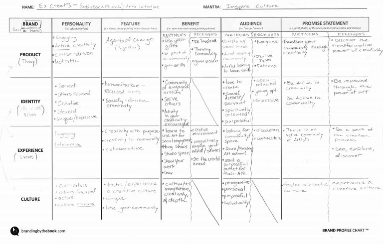

"In this meeting we all face the center, pointing at each other. Bring that point out with strong direction toward the greater goal, and now we all face the same way."
- Worked with the Marketing Director to establish marketing systems, market research and analysis, and community organization
- Created and directed Saddleback’s Marketing Ministry in order to connect leaders with volunteers to promote their ministries. (over 40 volunteer marketing professionals and 60 ministry leaders)
- Built automated reports to measure the success of each series of sermons (data sources: Google Analytics, Facebook Insights, and TweetReach)
- Worked with 5 ministries to set up their marketing strategies through branding, community management, and ad-tracking
- Designed a marketing strategy guide for ministries within a church environment